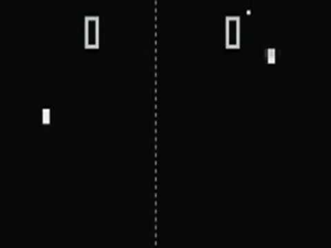

La historia de los videojuegos tiene su origen en la década de 1940 cuando, tras el fin de la Segunda Guerra Mundial, las potencias vencedoras construyeron los primeros superordenadores programables como el ENIAC, de 1946. Los primeros intentos por implementar programas de carácter lúdico (inicialmente programas de ajedrez) no tardaron en aparecer, y se fueron repitiendo durante las siguientes décadas. Los primeros videojuegos modernos aparecieron en la década de los 60, y desde entonces el mundo de los videojuegos no ha dejado de crecer y desarrollarse con el único límite que le ha impuesto la creatividad de los desarrolladores y la evolución de la tecnología. En los últimos años, se asiste a una era de progreso tecnológico dominada por una industria que promueve un modelo de consumo rápido donde las nuevas superproducciones quedan obsoletas en pocos meses, pero donde a la vez un grupo de personas e instituciones -conscientes del papel que los programas pioneros, las compañías que definieron el mercado y los grandes visionarios tuvieron en el desarrollo de dicha industria- han iniciado el estudio formal de la historia de los videojuegos.
Donkey Kong, de Shigeru Miyamoto (1981), uno de los videojuegos más populares de todos los tiempos.
El más inmediato reflejo de la popularidad que ha alcanzado el mundo de los videojuegos en las sociedades contemporáneas lo constituye una industria que da empleo a 120 000 personas y que genera unos beneficios multimillonarios que se incrementan año tras año. El impacto que supuso la aparición del mundo de los videojuegos significó una revolución cuyas implicaciones sociales, psicológicas y culturales constituyen el objeto de estudio de toda una nueva generación de investigadores sociales que están abordando el nuevo fenómeno desde una perspectiva interdisciplinar, haciendo uso de metodologías de investigación tan diversas como las específicas de la antropología cultural, la inteligencia artificial, la teoría de la comunicación, la economía o la estética, entre otras. Al igual que ocurriera con el cine y la televisión, el videojuego ha logrado alcanzar en apenas medio siglo de historia el estatus de medio artístico, y semejante logro no ha tenido lugar sin una transformación y evolución constante del concepto mismo de videojuego y de su aceptación. Nacido como un experimento en el ámbito académico, logró establecerse como un producto de consumo de masas en tan solo diez años, ejerciendo un formidable impacto en las nuevas generaciones que veían los videojuegos con un novedoso medio audiovisual que les permitiría protagonizar en adelante sus propias historias

A pesar de todos los avances, en 1958 el concepto de videojuego aún resultaba elusivo. El Nimrod de Bennett era lo más parecido a un videojuego que se había visto fuera del ambiente de los talleres de ingeniería y de los laboratorios de las universidades. Sin embargo, William Higinbotham un ingeniero norteamericano que había participado en el Proyecto Manhattan, presentó un proyecto que cautivó a todos los visitantes de su laboratorio: un juego de tenis que había construido con la ayuda del ingeniero Robert Dvorak usando la pantalla de un osciloscopio y circuitería de transistores. El juego, que recreaba una partida de tenis presentando una visión lateral de la pista con una red en el medio y líneas que representaban las raquetas de los jugadores, se manejaba con sendos controladores que se habían construido a tal efecto. El aparato tuvo un enorme éxito entre las personas que visitaron el laboratorio de Higinbotham en la Brookhaven National Library, pero en 1959 fue desmantelado para usar sus piezas en otros proyectos. Higinbotham continuó con sus actividades (que incluían la investigación básica y el activismo contra la proliferación nuclear) hasta su muerte, y es considerado por muchos como uno de los padres de los videojuegos modernos.